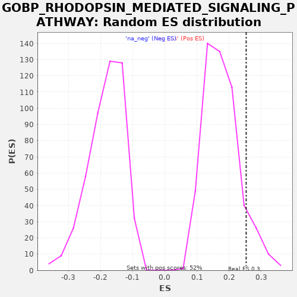

| | | Dataset | A_X_tradeoff |
| Phenotype | NoPhenotypeAvailable |
| Upregulated in class | na_pos |
| GeneSet | GOBP_RHODOPSIN_MEDIATED_SIGNALING_PATHWAY |
| Enrichment Score (ES) | 0.25308672 |
| Normalized Enrichment Score (NES) | 1.4292789 |
| Nominal p-value | 0.0967118 |
| FDR q-value | 0.8581598 |
| FWER p-Value | 1.0 |
Table: GSEA Results Summary
 Fig 1: Enrichment plot: GOBP_RHODOPSIN_MEDIATED_SIGNALING_PATHWAY
Fig 1: Enrichment plot: GOBP_RHODOPSIN_MEDIATED_SIGNALING_PATHWAY
Profile of the Running ES Score & Positions of GeneSet Members on the Rank Ordered List
| SYMBOL | RANK IN GENE LIST | RANK METRIC SCORE | RUNNING ES | CORE ENRICHMENT | | 1 | GNAT1 | 228 | -0.001 | 0.0337 | Yes |
| 2 | PPEF1 | 1599 | -0.009 | 0.0087 | Yes |
| 3 | GUCA1B | 2143 | -0.012 | 0.0262 | Yes |
| 4 | RS1 | 2757 | -0.016 | 0.0401 | Yes |
| 5 | PDE6G | 3637 | -0.022 | 0.0403 | Yes |
| 6 | GRK4 | 3645 | -0.022 | 0.0854 | Yes |
| 7 | PDE6A | 3704 | -0.022 | 0.1279 | Yes |
| 8 | CNGA1 | 3764 | -0.023 | 0.1703 | Yes |
| 9 | AIPL1 | 4520 | -0.029 | 0.1769 | Yes |
| 10 | SAG | 4736 | -0.031 | 0.2113 | Yes |
| 11 | RHO | 4979 | -0.033 | 0.2443 | Yes |
| 12 | METAP2 | 5692 | -0.041 | 0.2531 | Yes |
| 13 | GUCA1A | 6695 | -0.054 | 0.2470 | No |
| 14 | CNGB1 | 8569 | -0.082 | 0.1960 | No |
| 15 | FNTB | 11609 | -0.147 | 0.0851 | No |
| 16 | CAMKMT | 11698 | -0.149 | 0.1260 | No |
| 17 | GNB1 | 12005 | -0.157 | 0.1557 | No |
| 18 | FNTA | 12187 | -0.162 | 0.1919 | No |
| 19 | METAP1 | 12210 | -0.162 | 0.2362 | No |
| 20 | NMT1 | 15847 | -0.298 | 0.0945 | No |
| 21 | NMT2 | 17115 | -0.380 | 0.0748 | No |
| 22 | CALM1 | 18516 | -0.575 | 0.0482 | No |
Table: GSEA details [plain text format]

Fig 2: GOBP_RHODOPSIN_MEDIATED_SIGNALING_PATHWAY: Random ES distribution
Gene set null distribution of ES for GOBP_RHODOPSIN_MEDIATED_SIGNALING_PATHWAY